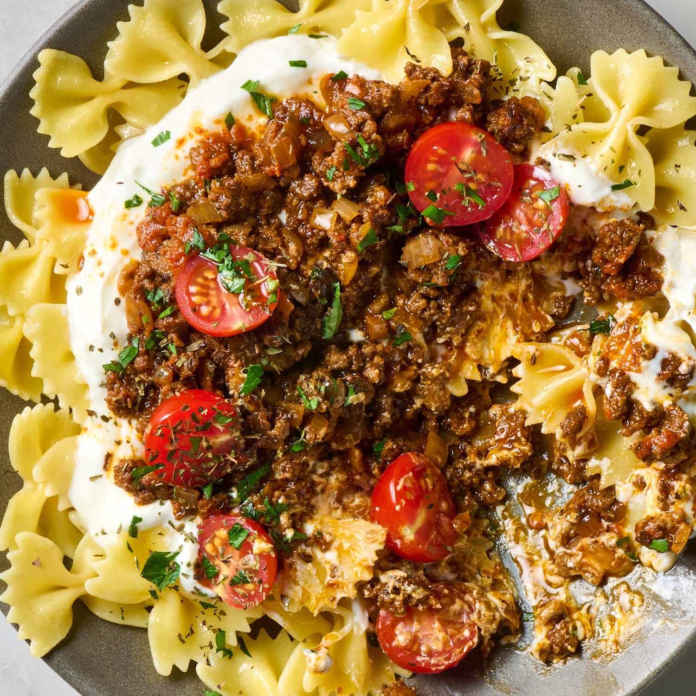

<-Home
Yalancı Mantı (Turkish Pasta) Recipe

Description
Yalancı Mantı (also called Turkish pasta) means “fake dumplings.” It gets
its name because the pasta is a shortcut version of Turkish mantı, a
delicious time-consuming dumpling dish filled with spiced meat and
finished with a Turkish pepper sauce and garlicky yogurt. The cheat
version employs pasta and quickly sautéed beef or lamb to avoid the
tedious task of forming and folding dumplings. It’s also called Kıymalı
Makarna, which means “minced meat pasta.”
I tried several different versions before landing on my ideal dish. To
break down what goes into Yalancı Mantı, the bowl starts with some
undressed short pasta. Top that with a generous dollop of Greek yogurt
mixed with lemon and garlic. Then you spoon over spiced beef or lamb that
you’ve cooked with onions and Turkish pepper paste until deeply browned
and crispy in spots. Drizzle that with some paprika butter, and top with
fresh cherry tomatoes, chopped parsley, and a little dried mint.
Ingredients
- 1 pound dried farfalle, rotini, or medium shell pasta
- 1 pound lean ground beef or ground lamb
- 1 medium yellow onion, finely diced (about 1 1/2 cups)
- 2 tablespoons Turkish red pepper paste or tomato paste
- 2 teaspoons paprika
- 1 teaspoon garlic powder
- 1 teaspoon ground cumin
- 3/4 teaspoon kosher salt, plus more as needed
- 1/4 teaspoon freshly ground black pepper
- 1/4 cup water
- 4 tablespoons (1/2 stick) unsalted butter
- 1 teaspoon paprika
- 1 teaspoon Turkish red pepper paste or tomato paste
- A pinch of kosher salt
- 2 cups plain Greek yogurt
- 4 cloves garlic, minced or finely grated
- 2 tablespoons freshly squeezed lemon juice (from 1 medium lemon)
- 1/2 teaspoon kosher salt
- 1 cup cherry or grape tomatoes, halved
-
1/2 cup finely chopped fresh parsley leaves (from 1/2 medium bunch)
- Dried mint, for garnish (optional)
Steps
-
Bring a large pot of salted water to a boil over high heat. Add 1 pound
dried farfalle pasta to the boiling water and cook according to package
directions until al dente. Drain and set aside. Meanwhile, make the
spiced beef, paprika butter, and yogurt sauce.
-
Heat a large skillet over medium heat. Add 1 pound lean ground beef and
cook, breaking it up into very smaller pieces, until no longer pink,
about 4 minutes. Stir in 1 medium finely diced yellow onion, 2
tablespoons red pepper paste, 2 teaspoons paprika, 1 teaspoon garlic
powder, 1 teaspoon ground cumin, 3/4 teaspoon kosher salt, and 1/4
teaspoon black pepper. Cook, stirring occasionally, until the beef is
deeply browned and crispy in spots, 7 to 10 minutes.
-
Remove the pan from the heat. Stir in 1/4 cup water and scrape up any
browned bits from the bottom of the pan. Taste and season with kosher
salt as needed.
-
Melt 4 tablespoons unsalted butter in a small saucepan over medium heat.
Stir in 1 teaspoon paprika, 1 teaspoon red pepper paste, and 1 pinch
kosher salt. Cook, stirring constantly, until bubbling and fragrant,
about 1 minute. Remove the saucepan from the heat.
-
Stir 2 cups plain Greek yogurt, 4 minced garlic cloves, 2 tablespoons
lemon juice, and 1/2 teaspoon kosher salt together in a medium bowl.
-
Divide the pasta into 6 individual bowls. Divide the yogurt mixture over
the pasta (about 1/3 cup each). Using a slotted spoon, divide the ground
beef mixture over the yogurt (about 1/4 cup each). Drizzle with the
paprika butter (about 2 teaspoons each). Garnish with 1 cup halved
cherry tomatoes and 1/2 cup finely chopped fresh parsley leaves.
Sprinkle with dried mint if desired.